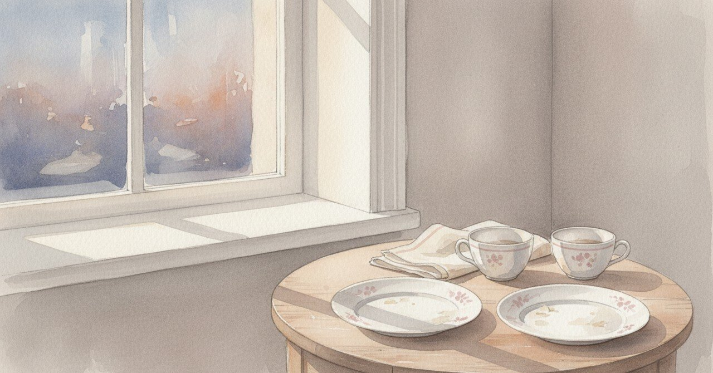

元カノと最後にご飯を食べた日、達成と別れが同居していた

2026-04-25、1年半前のあの夜のことを、今なら書ける気がした。書けるようになるまで、時間が要る日があった。
今日の現場
最近、予定がきれいに片付く日が増えた
でも心の中が整っているわけではない
何かを達成しながら、何かを失っている日もある
同時に起こるから、どちらも薄まる
それを「忙しさ」と呼んで誤魔化すのが楽だ
あの頃と今
2024年11月12日、22時55分。当時の日記の書き出しは「今日は最後に○○と一緒にご飯食べることできて幸せだったなー」だった。「ホントにまた会えると思うし、きっと一緒になれそうな気もするあー最後まで優しかったなー」と続けている。「最後」と「また会える」が同じ文にあった。
その同じ夜の日記には、車を売却して現金50万円が入金されることで元カノがお金の不安なく働けること、への感謝も書かれていた。感情の重い話と、50万円という具体の数字が並んでいた。
続きはこうなっていた。「今朝やりたかったTODOもしっかりできて達成感あるし。それに加えて筋トレもめっちゃできて自分すごいって思った」。さらに「同僚の電話対応のあとのフォローもうまくできたし、別の同僚のお金合わないトラブルもすぐ解決できて良かった」。そして締めの一文は「最高な一日だなー。明日も幸せな一日だ」。
人生で一番重たい別れの日を、「最高な一日」と書き切った自分が、日記の中に残っている。
頭の中
人生で一番重たい別れの日に、TODOが全部片付く、ということは起こりうる。悲しみの感度と、行動の効率は、別の回路で動いている。
ただ、あの日きっちり動けていたのは、動くことで感じないようにしていた部分もあったと思う。達成感は、麻酔の役目を兼ねる時がある。麻酔だと気づかないまま効かせているのが、一番たちが悪い。
「最高な一日」と書けた自分を、今の自分は少し遠くから見ている。書けたから乗り越えられた、とも、書いたから感じ損ねた、とも言える。
まだ途中のこと
「また会える」と書いた当時の自分は、今の自分が望むほうの未来を見ていない。それでも、あの夜そう書けたことは、たぶん悪くなかった。
読んでくれてありがとう。
#創作大賞2026 #日記 #別れ #ジャーナリング #記憶 #スキしてみて